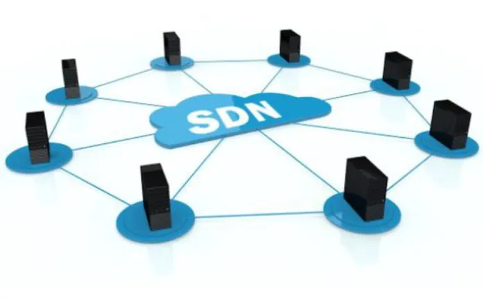

Uma rede definida por software (SDN) é uma forma inovadora de organizar as redes de computadores, pois não depende apenas de equipamentos físicos, como roteadores e switches. Em vez disso, utiliza um software especial chamado "controlador" para gerenciar a rede, que se comunica com os equipamentos físicos e direciona o tráfego na rede de forma personalizada e adaptável.
Diferentemente da rede tradicional, a SDN é baseada em uma infraestrutura de software que permite maior flexibilidade, personalização e gerenciamento centralizado da rede. Isso significa que os administradores podem controlar, configurar e alocar recursos de maneira mais eficiente, sem precisar adicionar mais hardware.
A segurança também é uma preocupação importante na SDN. Embora essa tecnologia ofereça maior visibilidade e capacidade de definir caminhos seguros, é importante proteger o controlador centralizado, que pode representar um ponto único de falha na rede e comprometer sua segurança.
Em resumo, a SDN é uma tecnologia revolucionária que oferece maior flexibilidade, personalização e gerenciamento centralizado da rede. No entanto, é necessário garantir a proteção do controlador para manter a segurança da rede.

Qual é o relação entre a SDN e a rede baseada em intenção?
A rede baseada em intenção (NBI) é uma abordagem de rede mais alta nível que reúne serviços de rede, como a SDN, para ajudar a simplificar o gerenciamento da rede. A SDN é usada para definir as políticas de rede, enquanto a NBI usa essas políticas para definir o comportamento da rede. O objetivo da NBI é aproveitar as capacidades de gerenciamento da SDN para tornar a rede mais inteligente, inteligente e auto-gerenciável. Em outras palavras, a SDN fornece as políticas e a NBI é usada para implementar essas políticas.